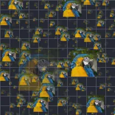

Campo di dispersione

Disperde copie del livello in un campo 3D infinito nascondendo il livello originale, e permette un movimento simulato nel campo in tre dimensioni tramite animazione con keyframe.
Impostazioni
| Impostazione | Tipo | Intervallo | Predefinito |
|---|---|---|---|
| Posizione | Punto (X, Y) | Da -99999 a 99999 | 0, 0 |
| Posizione Z | Numero | Da -99999 a 99999 | 0 |
| Densità | Numero | Da 0 a 1 | 0.3 |
| Evoluzione | Numero | Da -9999 a 9999 | 0 |
| Seme | Numero | Da 0 a 9999 | 0 |
| Scala | Numero | Da 0.05 a 20 | 1 |
| Dimensione | Numero | Da 0 a 10 | 0.5 |
| Angolo | Angolo | Da -3600° a 3600° | 0° |
| Variazione dimensione | Numero | Da 0% a 100% | 50% |
| Variazione angolo | Numero | Da 0% a 100% | 0% |
| Quantità | Numero | Da 0 a 40 | 15 |
| Dissolvenza | Numero | Da 0% a 100% | 100% |
| Alfa | Numero | Da 0% a 100% | 100% |
| Margine | Numero | Da 0% a 100% | 100% |
| Metodo di fusione | Scelta | Normale, Somma, Scherma, Moltiplica, Schiarisci, Scurisci, Sovrapponi, Differenza | Normale |
| Colorazione | Scelta | Nessuna, Casuale, Profondità | Nessuna |
| Colore 1 | Colore | – | #FF55AA |
| Colore 2 | Colore | – | #55AAFF |
| Colore 3 | Colore | – | #FFAA55 |
| Blocca luminanza | Attivo o disattivo | – | Attivo |
| Blocca saturazione | Attivo o disattivo | – | Disattivo |
| Interpola tonalità | Attivo o disattivo | – | Disattivo |